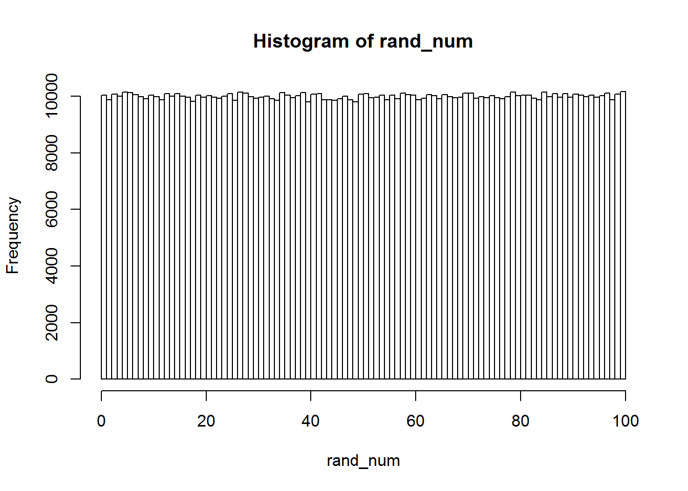

1+1## [1] 25/7## [1] 0.7142857helpful tip - “r eval=FALSE” in “{r}”(will not run code but display it)
rich <- 1
rich## [1] 1array1 <- 1
for(i in 2:100){
array1 <-c(array1, i)
}
array1## [1] 1 2 3 4 5 6 7 8 9 10 11 12 13 14 15 16 17
## [18] 18 19 20 21 22 23 24 25 26 27 28 29 30 31 32 33 34
## [35] 35 36 37 38 39 40 41 42 43 44 45 46 47 48 49 50 51
## [52] 52 53 54 55 56 57 58 59 60 61 62 63 64 65 66 67 68
## [69] 69 70 71 72 73 74 75 76 77 78 79 80 81 82 83 84 85
## [86] 86 87 88 89 90 91 92 93 94 95 96 97 98 99 100*returns a set of numbers (all real numbers)
alternatively
array2 <- seq(1,100)
array2## [1] 1 2 3 4 5 6 7 8 9 10 11 12 13 14 15 16 17
## [18] 18 19 20 21 22 23 24 25 26 27 28 29 30 31 32 33 34
## [35] 35 36 37 38 39 40 41 42 43 44 45 46 47 48 49 50 51
## [52] 52 53 54 55 56 57 58 59 60 61 62 63 64 65 66 67 68
## [69] 69 70 71 72 73 74 75 76 77 78 79 80 81 82 83 84 85
## [86] 86 87 88 89 90 91 92 93 94 95 96 97 98 99 100*returns a set of integers
array3 <- sum(seq(1,100))
array3## [1] 5050mySum<- function (x,y) {
sumVector <- sum(seq(x,y))
return(sumVector)
}
mySum(1,5)## [1] 15array4 <- seq(1,100,2)
array4## [1] 1 3 5 7 9 11 13 15 17 19 21 23 25 27 29 31 33 35 37 39 41 43 45
## [24] 47 49 51 53 55 57 59 61 63 65 67 69 71 73 75 77 79 81 83 85 87 89 91
## [47] 93 95 97 99alternatively
for loop can iterate differently (1:100) or seq(2,100,2) or using array of strings
array5 <- c()
for(i in 1:100){
if(i%%2 > 0){
array5<-c(array5,i)
}
}
array5## [1] 1 3 5 7 9 11 13 15 17 19 21 23 25 27 29 31 33 35 37 39 41 43 45
## [24] 47 49 51 53 55 57 59 61 63 65 67 69 71 73 75 77 79 81 83 85 87 89 91
## [47] 93 95 97 99Use a vector and take advantage of NA and NULL to remove unwanted indices (non prime numbers)
#making a sequence of numbers
vec_num <- c(2:1000)
#search the vector to tag numbers divisible by 2, 3, 5, and 7
j <- 1
while(j <= 998){
vec_num[2+j] <- NA
j <- j+2
}
k <- 2
while(k <= 997){
vec_num[3+k] <- NA
k <- k+3
}
m <- 4
while(m <= 995){
vec_num[5+m] <- NA
m <- m+5
}
n <- 6
while(n <= 993){
vec_num[7+n] <- NA
n <- n+7
}
# Create new vector without tagged numbers
newvec_num <- c()
for(a in 1:length(vec_num)){
if(!is.na(vec_num[a])){
newvec_num <- c(newvec_num, vec_num[a])
}
}
newvec_num## [1] 2 3 5 7 11 13 17 19 23 29 31 37 41 43 47 53 59
## [18] 61 67 71 73 79 83 89 97 101 103 107 109 113 121 127 131 137
## [35] 139 143 149 151 157 163 167 169 173 179 181 187 191 193 197 199 209
## [52] 211 221 223 227 229 233 239 241 247 251 253 257 263 269 271 277 281
## [69] 283 289 293 299 307 311 313 317 319 323 331 337 341 347 349 353 359
## [86] 361 367 373 377 379 383 389 391 397 401 403 407 409 419 421 431 433
## [103] 437 439 443 449 451 457 461 463 467 473 479 481 487 491 493 499 503
## [120] 509 517 521 523 527 529 533 541 547 551 557 559 563 569 571 577 583
## [137] 587 589 593 599 601 607 611 613 617 619 629 631 641 643 647 649 653
## [154] 659 661 667 671 673 677 683 689 691 697 701 703 709 713 719 727 731
## [171] 733 737 739 743 751 757 761 767 769 773 779 781 787 793 797 799 803
## [188] 809 811 817 821 823 827 829 839 841 851 853 857 859 863 869 871 877
## [205] 881 883 887 893 899 901 907 911 913 919 923 929 937 941 943 947 949
## [222] 953 961 967 971 977 979 983 989 991 997 u <- runif(100)
u## [1] 0.708961457 0.083554741 0.434581439 0.095941415 0.835844275
## [6] 0.923896680 0.182436426 0.010007523 0.673048655 0.493654190
## [11] 0.562926593 0.598763338 0.092726391 0.665359971 0.489232208
## [16] 0.085934765 0.460920255 0.342579363 0.100039626 0.547178841
## [21] 0.553864069 0.763094937 0.876573305 0.295824578 0.198184385
## [26] 0.591675783 0.961304453 0.379450612 0.569911027 0.737016364
## [31] 0.057598644 0.965847403 0.218719460 0.239793126 0.001275044
## [36] 0.548524192 0.773336280 0.649710569 0.461974109 0.984516253
## [41] 0.719240386 0.070121743 0.389455492 0.355295796 0.364357300
## [46] 0.740269864 0.338456221 0.710273366 0.143303894 0.382074323
## [51] 0.531691235 0.622779787 0.616458503 0.916704828 0.938653176
## [56] 0.855969107 0.118968726 0.333475519 0.360731592 0.646473683
## [61] 0.469430303 0.379294062 0.799323255 0.034591241 0.454581925
## [66] 0.127466783 0.645681427 0.661346740 0.553868332 0.602554057
## [71] 0.657985814 0.080869754 0.531039528 0.889484067 0.935766809
## [76] 0.255657046 0.911702980 0.176536772 0.294012504 0.389717019
## [81] 0.894938382 0.826311674 0.888622792 0.442370820 0.808286993
## [86] 0.086680830 0.724891540 0.182101231 0.516803098 0.366077899
## [91] 0.422516496 0.430683219 0.910685415 0.645526443 0.690323802
## [96] 0.187760806 0.656598434 0.189265648 0.735077541 0.631269149 alpha <- runif(100, min = 1, max = 9)
alpha## [1] 4.505981 3.937231 1.761575 7.137830 1.784085 6.135054 7.970499
## [8] 2.901955 3.368587 2.861202 2.533428 3.860037 7.291582 2.008770
## [15] 3.133168 3.530339 2.639317 8.617512 5.994182 2.515259 4.772628
## [22] 6.344243 1.880412 8.611884 2.225510 8.386108 2.402538 8.547245
## [29] 8.718619 2.394736 1.392357 7.421323 6.188432 5.366958 3.510852
## [36] 7.176088 5.715668 8.790340 8.596396 1.656240 3.940848 2.645957
## [43] 8.361046 5.202711 3.588020 7.911747 2.860109 4.267095 5.638904
## [50] 3.819708 1.187485 3.811627 4.750877 1.456377 6.422953 6.071536
## [57] 2.859524 1.142035 3.117645 6.265889 8.845592 4.772952 1.477018
## [64] 7.846036 5.642040 4.443150 4.079601 2.932974 7.279211 2.905322
## [71] 1.011791 5.902086 4.603089 3.494570 7.409758 8.352012 7.865262
## [78] 8.576480 6.686363 4.046194 6.727992 5.133459 2.273643 7.545407
## [85] 3.689816 5.115782 1.328348 8.695216 6.012409 6.287112 3.227040
## [92] 4.978714 3.937544 1.292945 3.978251 8.894325 8.530960 8.123910
## [99] 2.153545 7.212426 aa <- c(10,20,20,30,40,50,60)
mean_of_X <- function(x) {
return (sum(x)/length(x))
}
mean_of_X(aa)## [1] 32.85714 mode_of_X <- function(x){
temp_high_num <- c()
count <- 0
for(i in 1:length(x)) {
for(j in 1:length(x)) {
if(x[i] == x[j]) {
count = count + 1
}
}
if(count > 1) {
temp_high_num <- x[i]
}
count <- 0
}
return(temp_high_num)
}
mode_of_X(aa)## [1] 20 median_of_X <- function(x){
if(length(x)%%2 > 0) {
med <- x[((length(x)-1)/2) + 1]
}
else{
med <- (x[(length(x)/2)] + x[(length(x)/2) + 1])/2
}
return(med)
}
median_of_X(aa)## [1] 30 range_of_X <- function(x){
rge <- x[length(x)] - x[1]
return(rge)
}
range_of_X(aa)## [1] 50 std_dev_of_X <- function(x) {
avg <- mean_of_X(x)
sumOfsquares <- 0
for(i in 1:length(x)) {
sumOfsquares = sumOfsquares + (x[i] - avg)^2
}
std_dev <- sqrt(sumOfsquares/(length(x)-1))
return(std_dev)
}
std_dev_of_X(aa)## [1] 17.99471 bb <- "adrthbjyiop"
dd <- unlist(strsplit(bb, ""))
print(length(dd))## [1] 11 cc <- "This is a sentence"
ee <- unlist(strsplit(cc, split = " "))
print(length(ee))## [1] 4 paragraph <- "Four score and seven years ago our fathers brought forth on this continent, a new nation, conceived in Liberty, and dedicated to the proposition that all men are created equal. Now we are engaged in a great civil war, testing whether that nation, or any nation so conceived and so dedicated, can long endure. We are met on a great battle-field of that war."
sep_paragraph <- unlist(strsplit(paragraph, split = ".", fixed = TRUE))
print(length(sep_paragraph))## [1] 3 search_char <- function(x, letter){
dd <- unlist(strsplit(x, ""))
count <- 0
for(i in 1:length(dd)) {
if(dd[i] == letter){
count = count + 1
}
}
return(count)
}
search_char("abcdeggg", "g")## [1] 3 test_word <- "hello"
test_sentence <- "hello my name is Richard"
split_test_sentence <- unlist(strsplit(test_sentence, split = " "))
test_word%in%split_test_sentence## [1] TRUE current_time <- (as.numeric(Sys.time())*1000)
print(current_time, digits = 15)## [1] 1550206689216.36 current_time1 <- (as.numeric(Sys.time())*1000)
for(i in 1:10000000){}
current_time2 <- (as.numeric(Sys.time())*1000)
cat(total_time = current_time2 - current_time1, "milliseconds")## 252.4021 milliseconds table2 <- read.csv("abc.csv")
table2$Fruits## [1] apples bananas oranges grapes
## Levels: apples bananas grapes oranges table3 <- write.table(c(1,2,3,4,5,6), "abc3.txt")
table3 <- read.table("abc3.txt")
table3## x
## 1 1
## 2 2
## 3 3
## 4 4
## 5 5
## 6 6 random_matrix <- matrix(runif(100, min = 1, max = 9), ncol=20,nrow=20)
random_matrix[,19]## [1] 4.880158 3.244540 5.716508 6.738839 2.153436 5.979261 1.294626
## [8] 4.414270 6.990961 5.797040 8.029916 6.309250 8.498245 3.108051
## [15] 7.822761 3.512670 8.492516 2.601541 3.820639 6.447718 matrixA <- data.frame(x = c(1,2,3), y = c(3,6,9), z = c(10,20,30))
write.csv(matrixA, file = "sample_matrix.csv", row.names = FALSE)Fizzbuzz
vec_num <- c(1:100)
k <- 1
while(k <= 100) {
if(vec_num[k]%%3==0 || vec_num[k]%%5==0) {
if(vec_num[k]%%3==0 && vec_num[k]%%5== 0) {
print("FizzBuzz")
k <- k + 1
}
else if(vec_num[k]%%5 == 0) {
print("Buzz")
k <- k + 1
}
else {
print("Fizz")
k <- k + 1
}
}
else {
print(vec_num[k])
k <- k + 1
}
}Frequency Count
search_char <- function(x, letter){
dd <- unlist(strsplit(x, ""))
count <- 0
for(i in 1:length(dd)) {
if(dd[i] == letter){
count <- count + 1
}
}
return(count)
}
phrase <- "I love R studio"
search_phrase <- unlist(strsplit(phrase, ""))
found_number <- c()
for(i in 1:length(search_phrase)) {
found_number <- c(found_number, search_char(phrase, search_phrase[i]))
}
xx <- data.frame(search_phrase, found_number)
print(unique(xx))## search_phrase found_number
## 1 I 1
## 2 3
## 3 l 1
## 4 o 2
## 5 v 1
## 6 e 1
## 8 R 1
## 10 s 1
## 11 t 1
## 12 u 1
## 13 d 1
## 14 i 1Test Random Number Generator
rand_num <- runif(1000000,0,100)
hist(rand_num, breaks = 101)